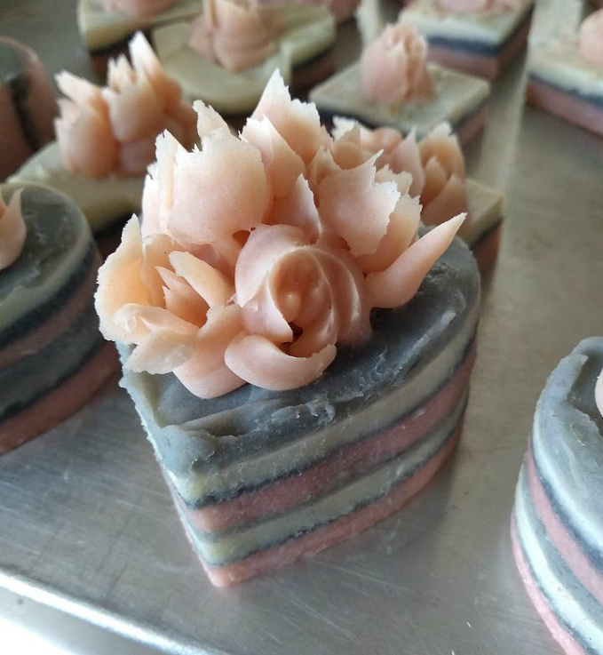
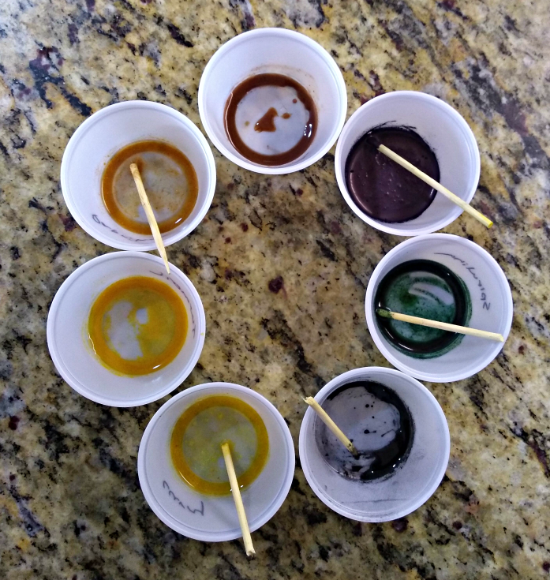
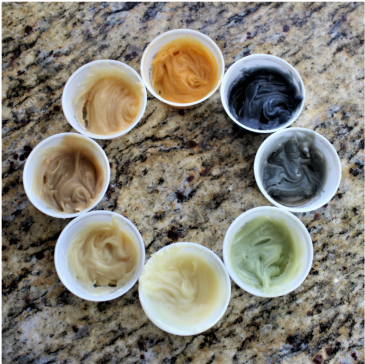

Welcome to my Soap page



I love to make soap. It is easy and fun! I love to add colors, scents, and textures to create fancy and ornate soaps. How? There are two ways to make soap: the cold process and the hot process. I like to make soap using the cold process. Cold process soap is made by warming up oils and fats, mixing in a lye-water solution, and then adding scents and colors.